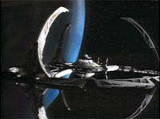
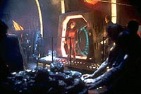
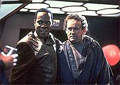
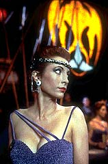

MANCHETE
DO EPISDIO
O
universo do Espelho ataca de novo,
em continuao de episdio clssico
Episdio
anterior | Prximo
episdio
Sinopse:
Data Estelar: 47879.2.
Kira e Bashir, enquanto regressando
de uma misso, passam por uma espcie de perturbao no
interior da Fenda Espacial. Aps finalmente efetuarem a difcil
travessia, eles ficam surpresos por no encontrar Deep Space Nine
na vizinhana da fenda. mas sim orbitando Bajor.
Rapidamente eles percebem estar em um universo alternativo, um em
que a humanidade foi feita escrava de uma brutal aliana
Klingon-Cardassiana. Uma verso alternativa de Kira, chamada
simplesmente de Intendente, comanda a Terok Nor deste universo,
tendo uma verso alternativa de Garak como seu primeiro-oficial.

Bashir
imediatamente jogado no setor de minerao, comandado pelo
Mirror-Odo (a verso alternativa de Odo), onde encontra o
Mirror-O'Brien (tambm conhecido como "Smiley", ou
"Sorriso") fazendo a manuteno do lugar. Por outro
lado a Intendente fica completamente fascinada com Kira e lhe
conta que foram as reformas do Mirror-Spock (iniciadas aps o
episdio da srie original "Mirror, Mirror") que
propiciaram a queda do Imprio e o surgimento da Aliana
Klingon-Cardassiana, da qual a Bajor deste universo membro.
Bashir e Kira decidem tentar recrutar a ajuda de Smiley nos
transportes para tentar voltar para casa com este mtodo. Smiley
diz que no vai ajudar Bashir.
Kira procura ajuda com o Mirror-Quark a respeito do transporte,
que logo em seguida preso por facilitar a fuga de escravos. Ento
chega ao bar, com a sua tripulao, o Mirror-Sisko, que presta
servios de pilhagem e de alcova para a Intendente. Ela manda
matar o Mirror-Quark e avisa a Kira que os transportes deste
universo foram modificados para impedir novas travessias. A
Intendente tambm diz que promover uma festa noite em
homenagem major.
De volta aos seus aposentos, Kira encontra o Mirror-Garak, que
quer o posto da Intendente. O Cardasssiano diz que vai matar a
Intendente, colocar Kira no lugar dela e depois faz-la renunciar
em seu favor. Ele diz que deixaria Kira e Bashir partirem aps a
parte dela ser honrada. Kira conta do ocorrido ao Mirror-Sisko,
tentando conseguir ajuda, mas ele diz que artimanhas do
Mirror-Garak no so novidade alguma e no se compromete em
ajudar.
Aps um grave acidente no setor de minerao, ocorre uma fuga
em massa dos escravos, e Bashir consegue escapar, matando o
Mirror-Odo no processo. Bashir encontra Smiley e finalmente
consegue convenc-lo a ajudar Kira e ele a fugir, concordando em
levar o outro O'Brien com eles para casa. Entretanto sua fuga e
interrompida por guardas Klingons que os levam a presena da
Intendente na festa.

A
Intendente, furiosa com a morte do Mirror-Odo, ordena que o
Mirror-Garak mate os dois. Antes de o Cardassiano os levar para a
execuo, Smiley explica a ela por que ajudou Bashir em primeiro
lugar, dizendo que seja l como for o lugar de onde Bashir veio,
ele tem de ser melhor do que este em que ele vive. o Mirror-Sisko
finalmente se sensibiliza e ajuda na fuga de Bashir e Kira, e
acaba fugindo tambm com sua tripulao, reforada por Smiley.
Kira e Bashir conseguem recriar as condies do acidente
original e conseguem voltar para casa.
Comentrios:
muito difcil produzir uma sequncia de um clssico, e ao
menos igualar (quanto mais superar) a qualidade do original. DS9
conseguiu realizar esta mgica aqui em "Crossover",
onde oferece um retrato mais complexo e perturbador dos
personagens regulares de DS9 em uma premissa "E
se...?", do que aquele oferecido dos personagens da srie
original, no clssico (indicado ao prmio Hugo) "Mirror,
Mirror". Saiba mais detalhes, sem ter a necessidade de
fazer nenhuma "travessia" para um universo paralelo, nas
linhas abaixo.
(DS9 ainda faria tal "mgica" mais uma vez,
quando produziu em sua quinta temporada uma espcie de sequncia
ou revisita ao clssico episdio da srie original "The
Trouble With Tribbles", intitulada "Trials and
Tribble-ations".)
"Crossover" de fato uma sequncia de "Mirror,
Mirror", pois a sua premissa bsica derivada
diretamente da cena final no "universo do Espelho" em
que Kirk tenta convencer o Mirror-Spock a pregar reformas polticas
no Imprio. Quase um sculo depois deslumbramos os resultados de
tais reformas neste episdio de DS9.
A idia de que o Mirror-Spock se tornou uma figura similar a
Edith Keeler em "The City On The Edge Of Forever",
que teve sucesso em sua cruzada pela paz e desarmamento, mas ainda
assim trouxe o completo holocausto a toda a humanidade daquele
universo, ao mesmo tempo genial e absolutamente perturbadora.
Bravo!

(Entretanto
o fato de que os que eram escravos, e que agora escravizam os que
os escravizavam, continuam a adotar os mesmos mtodos e estilo de
vida dos seus antigos senhores provavelmente mais medonho
ainda, sugerindo um eterno ciclo de guerra, fome e morte.)
(Provavelmente nada mais sintomtico sobre este "universo
do Espelho" do que as cenas justapostas dos terrqueos
comendo como porcos, a Intendente sendo banhada em leite por
Vulcanos e Mirror-Sisko pilhando o bar do Mirror-Quark para dar de
beber aos seus homens.)
A trama do episdio foi do tipo "mais simples impossvel",
favorecendo ricas caracterizaes em uma atmosfera perturbadora
com um sem nmero de texturas que pessoas menos gabaritadas
teriam muita dificuldade de empacotar em uma hora de TV. Apesar de
achar o final um pouco corrido (ainda que, neste caso, esta seja
uma melhor soluo do que ir para o formato de um episdio
duplo, uma deciso sempre difcil), no h problemas em
aceitar o acidente na estao de minerao (a razo de
existir daquela Terok Nor) como uma suficiente cortina de fumaa
para permitir a fuga. O eterno clich trekker da "recriao
exata do acidente que nos trouxe aqui para nos levar de volta ao
lugar de one viemos" tambm no fere em nada a premissa
"E se...?" do episdio.
Agora vamos ao que realmente importa: os personagens!
Lembrando que as verses alernativas dos personagens e as suas
interaes (entre eles e com Bashir e Kira) foram escolhidas
para extrair o mximo de drama da premissa "E se...?"
subjacente, por exemplo contrastando relacionamentos e
acontecimentos rotineiros do nosso universo com aqueles que vemos
distorcidos no episdio. Novos detalhes "cismam" de
pipocar a cada assistida (caracterstica comum do trabalho de
Fields), tornando impossvel (e ao mesmo tempo intil) esmiuar
completamente o episdio.
Bashir teve um papel extremamente secundrio, essencialmente ser
o "tpico cidado da Federao" e fazer a ponte com
Smiley, o "tpico escravo da Aliana". Mas ver Bashir
todo sujo, rasgado e fedido mandando a Federao para o inferno,
antevendo repercusses quanto a volta de Smiley com ele e Kira,
foi um verdadeiro clssico.
Mirror-Garak propositalmente mais raso do que o Garak original.
extremamente direto e pouco sutil, vingativo e sedento pelo
poder.

Mirror-Odo,
referido simplesmente como "Supervisor", usa armas,
completamente odioso e brutal, com "regras de obedincia"
(cuja desobedincia punida com tapas no rosto) e ainda possui
claramente capacidades metamrficas. Em seu discurso final, a
Intendente traa um aterrador paralelo entre os dois Odos e deixa
transparecer uma afeio entre os dois.
(Perguntas nunca respondidas: Existe um Dominion ou equivalente
neste universo? Como so eles?)
Mirror-Quark se revela um nobre, trabalhando na libertao dos
escravos, mesmo sugerindo a Kira a possibilidade de envi-los
para o outro universo. No sabe o que Latinum e parecia ter
uma relao muito melhor com a Intendente do que aquela que
existe entre os reais Quark e Kira.
Enquanto Bashir foi posto imediatamente no trabalho escravo, Kira
foi colocada em uma posio de extremo conforto e liberdade de ao.
O fato de ambos chegarem mesma concluso sobre o
"universo do Espelho" s depe a favor da atmosfera do
episdio. O fato de Kira ter jogado limpo o tempo todo com a
Intendente, aliado a pequenos pontos, como quando ela diz que
Bajor pode aprender uma pouco com a Bajor deste universo e de que
ela sente medo da Intendente, pem em dvida --se ela tivesse
que realmente escolher entre seguir o plano do Mirror-Garak ou no--
que deciso ela escolheria.
A Intendente dotada de uma incrvel presena e domnio da
situao, ainda que essencialmente a um passo da total loucura a
cada ponto. O supremo sentimento narcisista que Kira desperta nela
(sem falar no subtexto de lesbianismo), s serve para tornar
ainda mais complexa a personagem. A cena que melhor descreve a
personagem aquela em que o Mirror-Quark trazido sua
presena aps o interrogatrio. Ela mostra sentir grande
empatia pelo Ferengi, manda mat-lo de forma rpida e indolor e,
enquanto ainda ouvindo os gritos de misericrdia do Mirror-Quark,
fala a Kira casualmente sobre os planos para a festa que ela est
organizando em homenagem a Major. O seu desgosto pela violncia
se choca de forma brutal com a sua ordem para o Mirror-Garak
executar Bashir e o Mirror-O'Brien.
Mirror-Sisko se revela um verdadeiro achado tanto em termos do
episdio quanto em direes que seriam tomadas com o verdadeiro
Sisko no futuro da srie. Suas expresses faciais, sua linguagem
corporal e suas risadas so extremamente perturbadoras, o tipo do
cara que voc no quer ao seu lado nem que ele AME voc. Sua
pose de pirata e benfeitor da sua tripulao, que pegou um
atalho, pela cama da Intendente, para fora do trabalho escravo se
revela extremamente frgil, e ele bem sabe disto, e isto fica
claro para a audincia desde que a Intendente o chama pela
primeira vez no comunicador. Ainda assim ele precisa da conversa
de Kira, de um Klingon escarrar no rosto de um dos seus homens e
do discurso do Mirror-O'Brien para tomar partido.
O depressivo Mirror-O'Brien acaba sendo o destaque do episdio
(apesar do reduzido tempo de tela). Desde a sua recusa em ajudar
Bashir em primeiro lugar at a sua afirmao de que "eu
sou um homem decente", que absolutamente dolorosa de se
ouvir, at o seu discurso final Intendente, em que ele explica
por que acabou ajudando o doutor no final, Smiley acaba por
oferecer um grande senso de credibilidade e fechamento ao episdio.
A direo de David Livingston absolutamente fenomenal, e a
sua "Terok Nor Altenativa" deste episdio to
atmosfrica e perturbadora quanto a "Terok Nor de cinco anos
passados" de James Conway, em "Necessary
Evil". Alm da sua j familiar tcnica de
"aproximao e separao" (j discutida em "The
Maquis, Part I"), aqui ele utiliza uma famlia de
angulaes extremas para transmitir um senso de realidade
alterada.
Observem que logo aps o primeiro "crossover" com Kira
e Bashir no explorador ele muda as angulaes para transmitir o
senso de que "algo" mudou. Quando os Klingons se
transportam a bordo ele literalmente coloca a "cmera no cho"
para elevar ao mximo possvel esta impresso. As cenas
envolvendo as duas Kiras so to boas (ou melhores) do que os
melhores sonhos dos espectadores, simplesmente desconcertantes. O
seu domnio tcnico patente por todo o episdio. Tomem por
exemplo a cena em que o Mirror-Sisko enfrenta o Klingon Telok,
logo em seguida entra a "Intendente" tomando todas as
atenes, quando a cmera d um close no rosto de Kira para
pegar a reao da Major, pega tambm ao fundo, Mirror-Sisko e o
Klingon ainda de frente um para outro com os rostos apenas virados
para vislumbrar a entrada da comandante daquela Terok Nor.
Sensacional!
(Recomendaes tambm para todos os envolvidos com os cenrios,
com um muito inspirado smbolo para a Aliana, e iluminao
criando uma atmosfera espetacular, especialmente na estao de
minerao.)
Os atores mataram a pau, do realstico El Fadil at o impiedoso
Robinson, do brutal Auberjonois ao bondoso Shimerman, da
estonteante Visitor em dose dupla at o melhor Brooks de toda a srie
(at ento), sem falar no incrivelmente tocante Meaney. Talento
pra dar e vender!
A promessa do Mirror-Sisko em tentar organizar uma espcie de
revolta contra a Aliana teria consequncias mais frente, no
episdio "Through The Looking Glass", da
terceira temporada. Apesar de a Aliana descobrir a existncia
da Fenda Espacial neste episdio, no tivemos nenhum
desenvolvimento sobre isto ao longo da srie, algo do tipo uma
incurso ao quadrante Gama no "universo do Espelho" e
uma invaso em larga escala ao nosso universo.
(Ser a Fenda Espacial uma constante atravs dos universos? Esta
pergunta tambm nunca foi respondida durante a srie mas
"tenho f" que sim.)
(O cruzador Klingon que perseguia o Explorador entrou na Fenda
Espacial no final? Se entrou por que ele tambm no fez a
travessia?)
A nica cena que destoa da intensidade do episdio a cena
inicial entre Kira e Bashir no Explorador, ainda que interessante
por trazer um eco de uma cena, do piloto da srie, "Emissary", entre os dois, e menes amizade de
Bashir com O'Brien e do interesse de Bashir por Jadzia, perde feio
se comparada a intensidade do restante do episdio. Tal tempo de
tela poderia ser gasto para oferecer um maior "setup"
(envolvendo a colnia de Nova Bajor) para o episdio "The
Jem'Hadar" ou mesmo para oferecer um vislumbre, via algo
relacionado aos Profetas, por exemplo, para o que iria acontecer
no prprio episdio "Crossover".
O episdio sofre tambm das regras simplificadoras de "Mirror,
Mirror" (e de outros episdios que invocam uma premissa
"E se...?") que garantem que as verses alternativas
dos personagens ocupem uma mesma regio do espao que os seus
originais, uma simplificao que qualquer f de Sci-Fi j
aprendeu a viver com. Aqui no aparecem nem Mirror-Bashir nem
Mirror-Jadzia, que aparecero em "Through The Looking
Glass".
"Croosover" um colossal vencedor por
apresentar, dentro da sua proposta, uma slida base para uma
intrigante questo: da forma como as verses alternativas dos
personagens so apresentadas neste episdio, no seria possvel
que os reais personagens de DS9, que ns conhecemos, pudessem
chegar a tais extremos, desde que a histria tivesse transcorrido
um pouco diferente?
Citaes
Mirror-Kira - "Have you
lost your mind?"
("Voc perdeu a cabea?")
Mirror-Sisko - "No. I just... changed it."
("No, s mudei de idia.")
Mirror-Garak - "I do admire a well-tailored gown."
("Eu admiro uma vestimenta bem costurada.")
Kira - "The players are all the same, but... everyone
seems to be playing different parts."
("Os atores eram todos os mesmos, mas... todo mundo parecia
estar em diferentes papis.")
Mirror-Garak - "You're the perfect gift for the girl who
has everything!"
("Voc o presente perfeito para a garota que j tem
tudo!")
Mirror-Sisko - "You're looking in the wrong place for a
hero, ma'am."
("Voc est procurando um heri no lugar errado,
madame.")
Mirror-O'Brien - "I am a decent man!"
("Eu sou um homem decente!")
Bashir - "Starfleet would probably have a big problem with
[taking O'Brien along]... to hell with them. Let's go."
("A Frota Estelar provavelmente teria um grande problema com
[levar O'Brien junto]... pro diabo com eles. Vamos l.")
Trivia:
 Este episdio (assim como suas sequncias) baseado no mesmo
universo paralelo do episdio da segunda temporada da srie
original, "Mirror, Mirror". DS9 retornaria
ao "universo do espelho" por mais quatro vezes, nos
seguintes episdios: "Through the Looking Glass",
da terceira temporada, "Shattered Mirror", da
quarta temporada, "Ressurection", da sexta
temporada, e "The Emperor's New Cloak", da stima
temporada
Este episdio (assim como suas sequncias) baseado no mesmo
universo paralelo do episdio da segunda temporada da srie
original, "Mirror, Mirror". DS9 retornaria
ao "universo do espelho" por mais quatro vezes, nos
seguintes episdios: "Through the Looking Glass",
da terceira temporada, "Shattered Mirror", da
quarta temporada, "Ressurection", da sexta
temporada, e "The Emperor's New Cloak", da stima
temporada
A familia Duras (do "universo do Espelho") parece ser
muito importante na aliana Klingon-Cardassiana-Bajoriana.
O roteiro (originalmente chamado de "Detour") foi
co-escrito por Peter Allan Fields, em seu ltimo trabalho como
contratado na srie. Porm foi Robert Hewitt Wolfe que bolou o
conceito de que fora a aliana entre os Klingons e os
Cardassianos que tornou o "Imprio", do episdio "Mirror,
Mirror", algo to brutal em primeiro lugar. Tambm foi
ele que concebeu que a tentativa de pacificao da verso
alternativa de Spock (por sugesto de Kirk ao final de "Mirror,
Mirror") acabou dando errado, levando queda do
"Imprio" (algo no dissimilar ao que a personagem de
Edith Keeler faria, com consequncias similares, se no tivesse
morrido no episdio "The City on the Edge of
Forever", tambm da srie original).
Os ngulos de cmera, extremamente abertos, utilizados pelo
diretor David Livingston, foram baseados nos do filme "The
Third Man" e ajudam a conferir uma atmosfera de uma realidade
alterada.
Apesar de muitos duvidarem, Robert Blackman, o reponsvel pelo
vesturio da srie, jura que os uniformes de Kira e da
"Intendente" so essencialmente os mesmos. As maiores
diferenas, ele atribui aos saltos altos e atuao de Nana,
trazendo uma personagem totalmente diferente vida. Por incrvel
que possa parecer, todos os seus colegas acham a real
personalidade de Nana Visitor muito mais prxima da personalidade
da "Intendente" do que a da real Kira.
As filmagens do episdio precisaram de um dia extra devido ao
tempo gasto para filmar as cenas com as duas Kiras, em um trabalho
extremamente complexo e difcil. Na cena em que Kira toca o rosto
da "Intendente" a mo da dubl que utilizada.
A idia original era ter o "Mirror-Worf" (a verso
alternativa de Worf deste "universo do espelho") entre
os Klingons do episdio, mas quando Michael Dorn no ficou
disponvel para as filmagens, a maioria das falas que seriam para
o seu personagem foram modificadas e passadas para o
"Mirror-Garak". Mas Dorn acabaria tendo a sua real
chance no "universo do espelho" nos episdios "Shattered
Mirror" e "The Emperor's New Cloak".
O coordenado de dubls Dennis Madalone trabalha neste e em todos
os outros episdios do "universo do espelho" em DS9
como o personagem Marauder.
A banheira usada pela "Intendente" a mesma usada por
Troi e Riker no filme "Jornada nas Estrelas - Insurreio".
Nana Visitor tem timas lembranas do episdio, especialmente
nas filmagens da cena da banheira em que "por uma tremenda
coincidncia" a equipe responsvel usou, na gua da
banheira, a NICA substncia capaz de desgrudar os tapa-seios de
Nana.
O Mirror-Odo morre no episdio e o Mirror-O'Brien
("Smiley") foge com o Mirror-Sisko e sua tripulao. A
Intendente (Mirror-Kira) e o Mirror-Garak permanecem na
"Terok Nor Alternativa".
O Mirror-Quark morre no episdio. Em cada episdio subsequente
relativo ao "universo do espelho", excetuando-se "Ressurection",
da sexta temporada, morre a verso alternativa de um Ferengi.
Ficha
tcnica:
Histria de Peter Allan Fields
Roteiro de Peter Allan Fields e Michael Piller
Direo de David Livingston
Exibido em 16/05/1994
Produo: 043
Elenco:
Avery Brooks como
Benjamin Lafayette Sisko
Ren Auberjonois como Odo
Nana Visitor como Kira Nerys
Colm Meaney como Miles Edward O'Brien
Siddig El Fadil como Julian Subatoi Bashir
Armin Shimerman como Quark
Terry Farrell como Jadzia Dax
Cirroc Lofton como Jake Sisko
Elenco convidado:
Andrew Robinson
como Garak
John Cothran, Jr. como Telok
Stephen Gevedon como um Klingon
Jack R. Orend como um Humano
Dennis Madalone como o Marauder